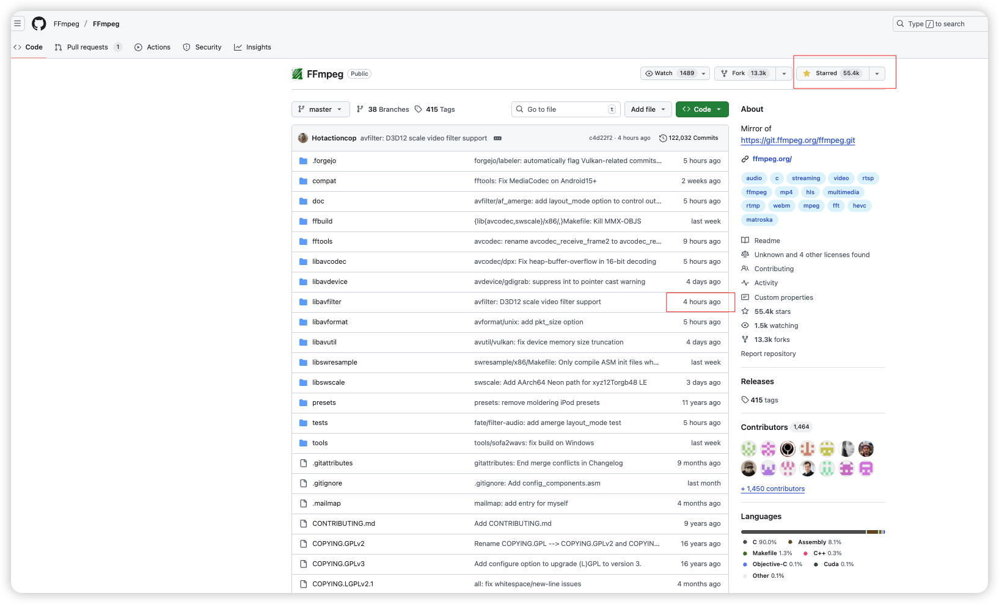
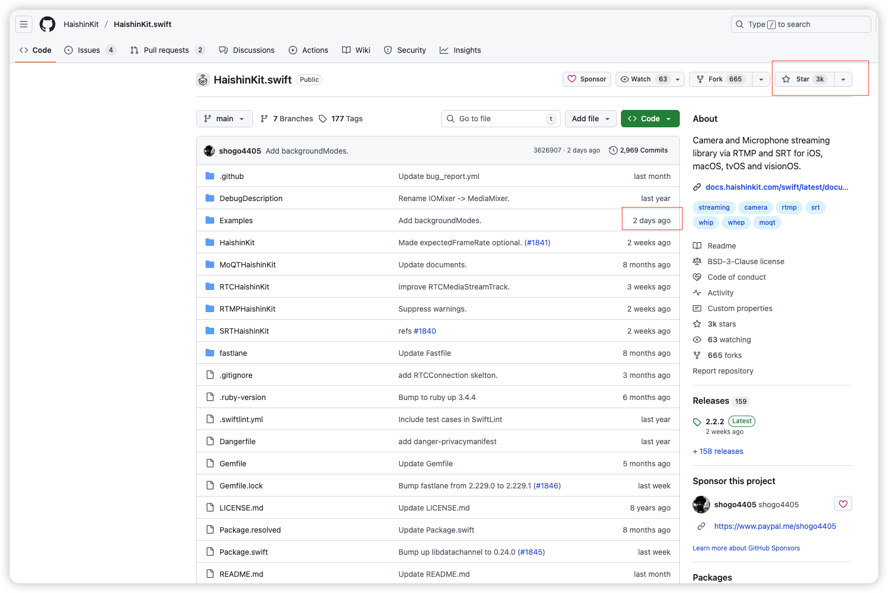
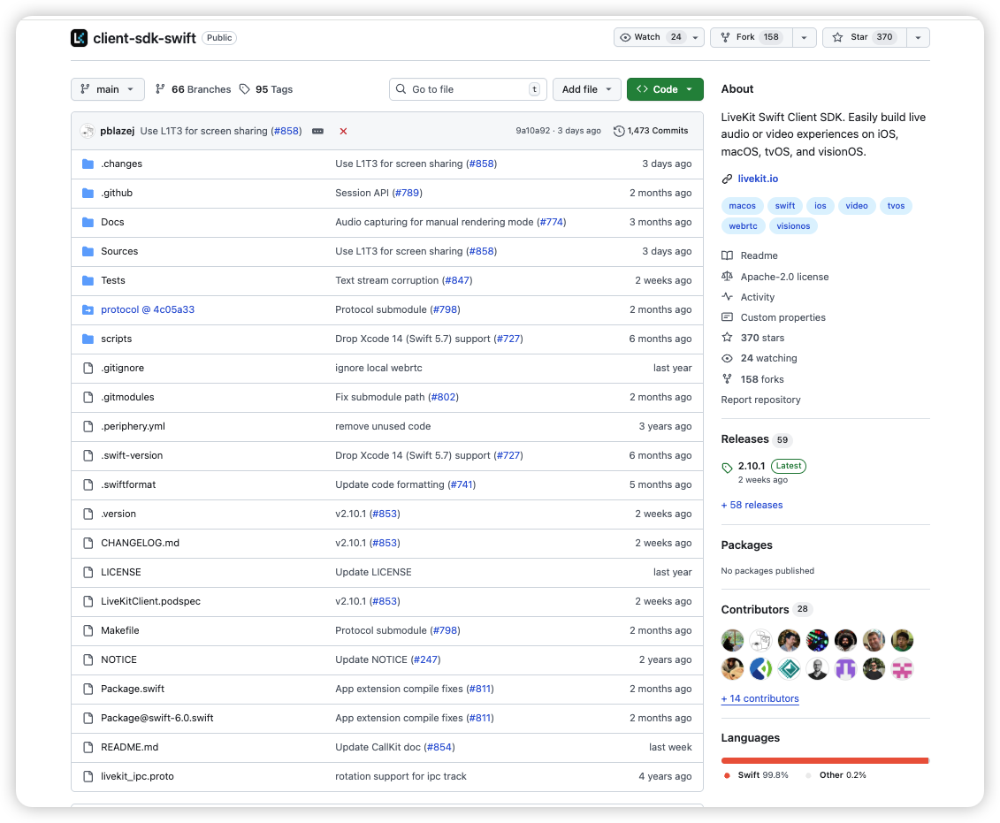
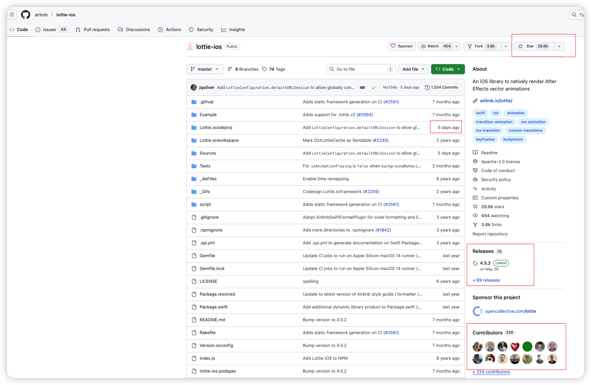
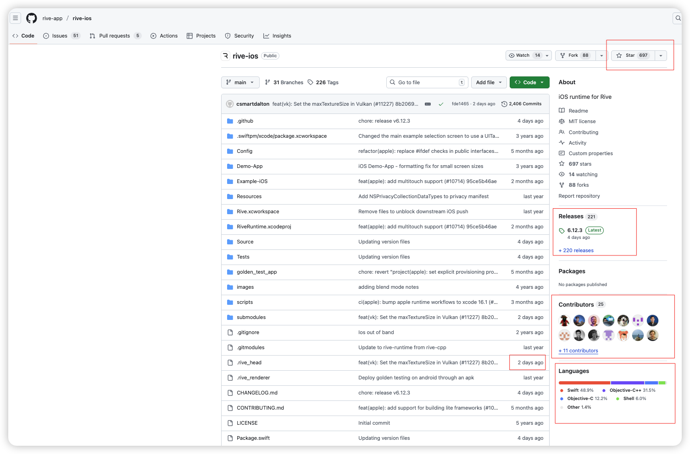
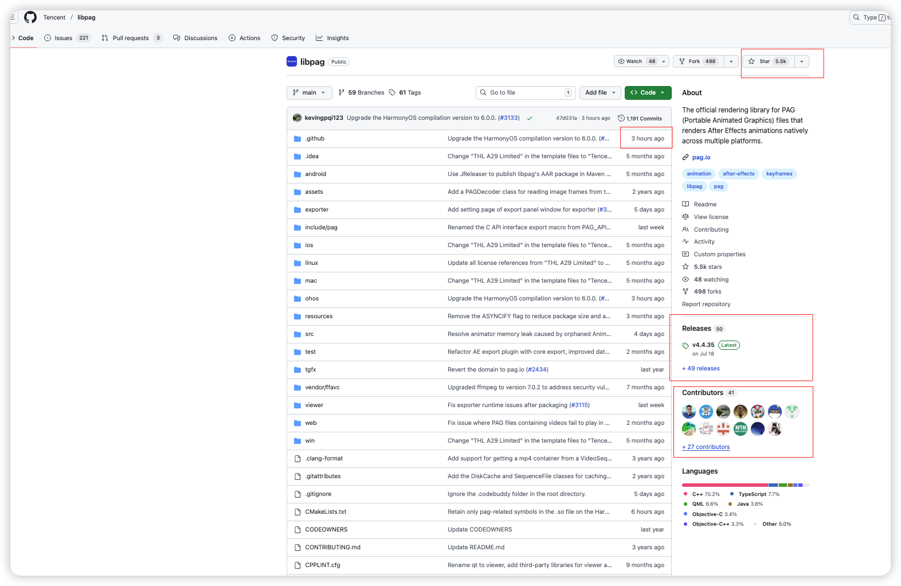

一、前言#
-
直播项目的核心难点，在于视频数据的处理，以及礼物特效
-
音视频这块是一个独立的领域，没有涉及过的技术人员，从理解基本原理到相关概念入手会比较吃力（在没有AI为辅助的基础上，目测需要3个月时间）
- 寻找相关文档
- 验证文档内容的真实可靠性
- 寻找适合的SDK或者相关开源框架
- 后端同样需要统一的齐平配合（统一的数据封装协议，流媒体服务器）
-
对于海外项目，特别是涉灰产业，直播这块如果定位于长期战略，强烈建议自建播放器
- 需要将最核心的组件部分，牢牢掌控在自己手里，防止因为政策变动，导致不可用
- 一定是有内容过滤。是否启用全凭政策，而政策又是摇摆的
- 大厂的播放器虽然稳定，对程序员来讲极度友好，但是代价（或者是隐患）就是：核心部分还是会打成
*.framework或者*.a/*.o文件，如果涉及到特殊需求，可能难以入手
-
音视频的控制粒度很细，全球公认的一个基础起点是ffmpeg（持续更新中…）至今无人超越

-
核心代码为C/C++。针对硬件加速（硬解码）的部分，会涉及到汇编
- 在具体的绑定层，才涉及到具体的特殊的语言转译
-
依据支持的音视频格式的不一，在代码层，提供了用户自定义的选择（意味着，需要根据自己的实际场景需求去打包）
-
中国内地大厂的播放器（比如：QQ影音、爱奇艺…），均是在此基础上构建起来的（ffmpeg要求免费开源，而中国大陆项目在商业上使用（收费），所以被ffmpeg钉上了耻辱柱）
-
在中国大陆，涉及到音视频相关产业的工程师的起薪，同级别要比其他要高1～1.5个层次（面试的时候，需要能准确说出ffmpeg指定函数的原理和机制）
-
因为这个过程非常复杂，传统的做法就是在一些开源的框架上去进行二次封装和开发（深度修改和定制化开发，耗时耗力）我们需要在成本与产出之间寻求一个合理的平衡点
-
那么，对普通的用户端来讲，其实只需要面对一个稳定的播放器（避免卡屏、蓝屏、有声音无图像、有图像无声音、音视频没对齐）足矣（面对一个URL来完成播放），特效都是建立在播放器控制层来完成的（比如水印）
-
对主播端来讲，情况就有些复杂，我们要面对复杂的数据采集编码，其中包括但不仅限于：
- 摄像头采集
-
麦克风采集
- 视频/音频编码参数（分辨率、码率、帧率、GOP）：
-
RTMP/WebRTC 推流
- 美颜/滤镜/贴纸（两端都可以做滤镜，但是更为主流的做法是放在主播端。云端美颜 / 特效理论上可以，但成本和延迟都很高，一般是大厂、特定业务才会玩）
-
弱网自适应码率、断线重连（推流侧那一套）
- 把声音和图像合二为一（只有多路混流（PK、连麦、大合唱）在服务器端做整合）
-
媒体流加密 / 自定义加密：第一层加密肯定是在主播端，服务器只做路由和内容转发。加密也分传输层（协议层）的加密➕内容加密
-
-
服务器端：内容转发、路由、水印
- 对数据进行切片，形成
*.m3u8，对客户端（HLS）
- 对数据进行切片，形成
-
画中画效果：实现端是具体的设备端，比如iOS/Android层
二、推流端（主播）架构#
-
采集模块
- 摄像头采集
- 麦克风采集
- 输入参数：分辨率、fps、前/后摄像头、采样率等
-
处理模块
- 美颜、滤镜、贴纸
- 通常基于 GPUImage（历史包袱，已被逐步被淘汰） / Metal / 内置美颜 SDK
-
编码模块
- H.264 / H.265 视频编码
- AAC 音频编码
- 码率、GOP、profile-level 设置
-
网络推流模块（服务器集群）
- RTMP / SRT / WebRTC / 自家协议
- 重连、网络切换（4G ↔ Wi-Fi）
-
会话控制模块
-
状态机
enum LivePusherState { case idle // 初始态，什么都没干 case preparing // 正在做准备（申请权限、配置 session） case ready // 采集和编码都就绪了，可以 start case connecting // 正在连接推流服务器（RTMP/WebRTC/SRT） case publishing // 推流中（音视频数据在往外发） case reconnecting // 断线重连中 case stopped // 正常停止 case error(LiveError) // 异常终止（权限拒绝/网络挂了/编码失败） } -
错误上报、码率统计、丢帧统计、日志上报
-
三、推流端（主播）开源框架#
1、传统直播（RTMP/SRT/CDN）#

- HaishinKit.swift的推荐理由
- 纯Swift开发，社区很活跃（79名贡献者，159个正式版本，最近一次提交位于2日前）
- HaishinKit.kt支持Android
- haishin_kit支持Flutter
- Camera + Mic 采集
- H.264 视频 + AAC 音频编码
- RTMP / RTMPS / SRT 推流
- 支持 iOS / macOS / tvOS / visionOS，一直在更新，10 年老项目。
2、互动直播 / 连麦（WebRTC 路线）#

- livekit推荐理由
- 纯Swift开发，社区很活跃（28名贡献者，59个正式版本，最近一次提交位于3日前）
- client-sdk-flutter支持Flutter
- client-sdk-android支持Android
- 基于 WebRTC 的实时音视频框架，客户端 SDK + 开源服务器。
- 整体代码基本开源（只是它同时卖一个托管的 Cloud 服务而已,付费），服务端是Go
- 采集摄像头 / 麦克风
- 发布本地 tracks（主播）
- 订阅远端 tracks（观众 / 其他麦位）
四、滤镜#
- 本质：对音视频信号做一层「加工处理」的算法或效果
- 对图像/视频来说
- 美颜（磨皮、美白、大眼瘦脸）
- 变色（黑白、复古、HDR、冷色调、暖色调）
- 模糊、虚化背景
- 加边框、加贴纸、加马赛克、抠图换背景
- 对音频来说（对声音波形做处理）
- 降噪、回声消除
- 均衡器（调高低音）
- 混响、变声（男变女、萝莉音）
- 对图像/视频来说
- 滤镜不止可以运行在客户端，也可以运行在服务器端
- 对客户端：在推流之前，对采集到的数据进行处理
- 对服务器端：缩放分辨率、裁剪、叠加台标（水印）、旋转、打字
- 「滤镜」不是一个具体的控件，而是一套处理音视频数据的算法/效果链
- 用现成的美颜SDK（不建议自己搞，工作量很可观）
- FaceUnity
- Banuba / 其他 Beauty AR SDK
- 腾讯系美颜（TRTC / Beauty AR SDK）
五、礼物特效#
大部分「礼物特效」严格意义上不叫滤镜，但实现上会用到跟滤镜类似的渲染技术。意味着礼物特效的播放是单独的播放引擎来处理
1、可选方案#
-
-
优点：
- 跨平台支持： iOS / Android / Flutter / Web / HarmonyOS
- 天然支持“大量贴图 + 关键帧”类型动画，很适合礼物那种：
- 大图飞进飞出
- 星星、爱心、硬币乱飞
- 支持合成、混合模式，搞一些“假 3D”透视、炫光也没问题。
- SVGA 在“礼物动画”这种重贴图、多关键帧场景下，通常比 Lottie 更稳定
- 国内大厂也用（比如，腾讯）
-
缺点：
- 已停更（无法适配更新的系统和硬件，出问题全靠自己修）
- 源代码是OC
- 不支持“真 3D”，只能做“伪 3D”。
- 矢量支持不如 Lottie动画播放器 完整，更多是位图 + 路径
- 设计链路要用它自己的工具链（现在也有 AE 插件，但没有 Lottie 那么主流）
-
-
Lottie动画播放器：接受的源文件（礼物特效）。UI 在 After Effects 里做动画利用插件（Bodymovin / LottieFiles AE 插件）导出特定格式动画
- 优点：
- 跨平台支持：iOS / Android / Web / React Native / Windows / Flutter
- Lottie 是更通用的 UI 动效格式
- 矢量为主，放大不糊，适合 UI 风格。
- 和 AE 结合紧密，设计师用 Bodymovin 导出就行。
- 支持部分表达式、蒙版、渐变等效果。
- 缺点
- Lottie 在 轻量 UI 动效 很舒服，但做大礼物时：JSON 体积会膨胀、解析 & 渲染压力会增加，容易掉帧
- AE 里有些复杂效果不支持（比如某些插件/3D 效果）。
- 大动画（粒子多、图层多）性能和体积会顶不住。
- 输出格式：
- 主格式为：
*.json（包含：图层、形状、路径、关键帧、缓动曲线、外部图片资源） - 副格式为：
*.lottie
- 主格式为：

- 优点：
-
Rive动画播放器：矢量 2D + 状态机，比 Lottie动画播放器 更偏“交互”。Rive Editor制作动画源文件导出至
*.riv- Rive 不支持真正的 3D，它是 2D 矢量动画引擎。

-

-
SpriteKit：Apple 自带的 2D 引擎，本质是做 2D 游戏的：场景（
SKScene）+ 精灵（SKSpriteNode）+ 粒子 + 物理- 跟 iOS 底层 Metal 集成得很好，性能强、调度可控。可以自己实现：
- 精灵帧动画（序列图）
- 粒子效果（烟花、爆炸、雨雪）
- 文本/图片拼礼物卡片
- 跟 iOS 底层 Metal 集成得很好，性能强、调度可控。可以自己实现：
-
Unity（好是好，可是太重了，一般用于游戏渲染。不推荐）#
个人或者小团队用 Unity，是可以免费用的；只有做到一定规模、赚钱到一定程度，才必须付费买 Pro / Enterprise。
之前吵得很凶的 Runtime Fee（按安装收费）已经取消了，现在就回到传统的「免费 Personal + 付费订阅」模式
-
Unity Personal（免费版）
- 价格：免费
- 资格条件：最近 12 个月，和这个项目相关的收入 + 融资 < 20 万美金（$200,000）。特点：
- 引擎核心功能都能用
- 允许商用、上架商店
- 现在连 “Made with Unity” 开屏都可以去掉（Unity 6 起）。
-
Unity Pro 付费
- 价格：现在大约 $2,200 美金/年/每个开发者账号（按座位计费）
- 资格条件：最近 12 个月相关收入/融资 > 20 万美金 且 < 2500 万美金
-
Unity Enterprise 付费
- 价格：定制报价，更贵
- 资格条件：最近 12 个月相关收入/融资 ≥ 2500 万美金
-
2、建议#
- 不建议用
*.gif格式做动效- 帧率和画质很不耐看
- 无法控制播放行为（播放过程中暂停、重启）
- 想生态、安全、教程多：Lottie ✅
- 想交互多、以后可玩性高：Rive ✅
- 想跟国内视频 / 直播生态更贴：可以研究 PAG（libpag），但上手成本会高一点。
- 前期全部的礼物特效是围绕2D特效展开
- 视频播放也可以作为一个参考面
- 3D特效需要更大的成本开销，在前期试探市场反应的情况下，不建议继续探索。成本更应该用在播放器的推拉流稳定性上